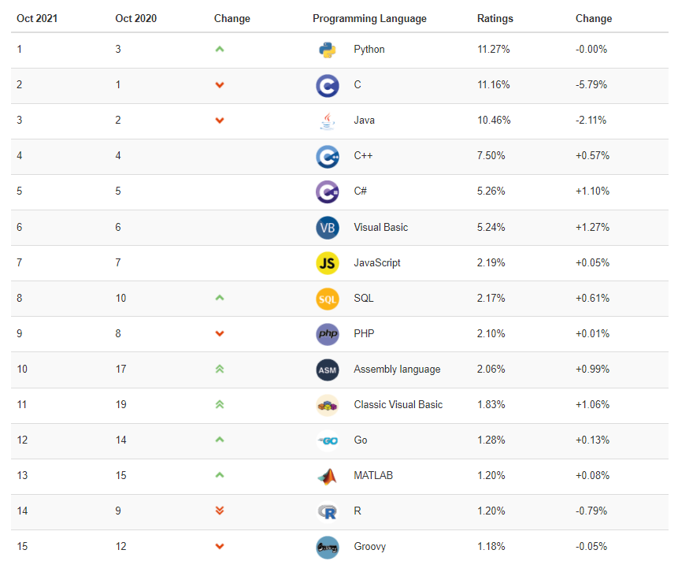

mysql基础篇-第03章-基本的SELECT语句
第03章_基本的SELECT语句
讲师：尚硅谷-宋红康（江湖人称：康师傅）
1. SQL概述
1.1 SQL背景知识
1946 年，世界上第一台电脑诞生，如今，借由这台电脑发展起来的互联网已经自成江湖。在这几十年里，无数的技术、产业在这片江湖里沉浮，有的方兴未艾，有的已经几幕兴衰。但在这片浩荡的波动里，有一门技术从未消失，甚至“老当益壮”，那就是 SQL。
- 45 年前，也就是 1974 年，IBM 研究员发布了一篇揭开数据库技术的论文《SEQUEL：一门结构化的英语查询语言》，直到今天这门结构化的查询语言并没有太大的变化，相比于其他语言，
SQL 的半衰期可以说是非常长了。
- 45 年前，也就是 1974 年，IBM 研究员发布了一篇揭开数据库技术的论文《SEQUEL：一门结构化的英语查询语言》，直到今天这门结构化的查询语言并没有太大的变化，相比于其他语言，
不论是前端工程师，还是后端算法工程师，都一定会和数据打交道，都需要了解如何又快又准确地提取自己想要的数据。更别提数据分析师了，他们的工作就是和数据打交道，整理不同的报告，以便指导业务决策。
SQL（Structured Query Language，结构化查询语言）是使用关系模型的数据库应用语言，
与数据直接打交道，由IBM上世纪70年代开发出来。后由美国国家标准局（ANSI）开始着手制定SQL标准，先后有SQL-86，SQL-89，SQL-92，SQL-99等标准。- SQL 有两个重要的标准，分别是 SQL92 和 SQL99，它们分别代表了 92 年和 99 年颁布的 SQL 标准，我们今天使用的 SQL 语言依然遵循这些标准。
不同的数据库生产厂商都支持SQL语句，但都有特有内容。

1.2 SQL语言排行榜
自从 SQL 加入了 TIOBE 编程语言排行榜，就一直保持在 Top 10。
1.3 SQL 分类
SQL语言在功能上主要分为如下3大类：
DDL（Data Definition Languages、数据定义语言），这些语句定义了不同的数据库、表、视图、索引等数据库对象，还可以用来创建、删除、修改数据库和数据表的结构。
- 主要的语句关键字包括
CREATE、DROP、ALTER等。
- 主要的语句关键字包括
DML（Data Manipulation Language、数据操作语言），用于添加、删除、更新和查询数据库记录，并检查数据完整性。
- 主要的语句关键字包括
INSERT、DELETE、UPDATE、SELECT等。 - SELECT是SQL语言的基础，最为重要。
- 主要的语句关键字包括
DCL（Data Control Language、数据控制语言），用于定义数据库、表、字段、用户的访问权限和安全级别。
- 主要的语句关键字包括
GRANT、REVOKE、COMMIT、ROLLBACK、SAVEPOINT等。
- 主要的语句关键字包括
因为查询语句使用的非常的频繁，所以很多人把查询语句单拎出来一类：DQL（数据查询语言）。
还有单独将
COMMIT、ROLLBACK取出来称为TCL （Transaction Control Language，事务控制语言）。
2. SQL语言的规则与规范
2.1 基本规则
- SQL 可以写在一行或者多行。为了提高可读性，各子句分行写，必要时使用缩进
- 每条命令以 ; 或 \g 或 \G 结束
- 关键字不能被缩写也不能分行
- 关于标点符号
- 必须保证所有的()、单引号、双引号是成对结束的
- 必须使用英文状态下的半角输入方式
- 字符串型和日期时间类型的数据可以使用单引号（’ ‘）表示
- 列的别名，尽量使用双引号（” “），而且不建议省略as
2.2 SQL大小写规范 （建议遵守）
- MySQL 在 Windows 环境下是大小写不敏感的
- MySQL 在 Linux 环境下是大小写敏感的
- 数据库名、表名、表的别名、变量名是严格区分大小写的
- 关键字、函数名、列名(或字段名)、列的别名(字段的别名) 是忽略大小写的。
- 推荐采用统一的书写规范：
- 数据库名、表名、表别名、字段名、字段别名等都小写
- SQL 关键字、函数名、绑定变量等都大写
2.3 注 释
可以使用如下格式的注释结构
1 | 单行注释：#注释文字(MySQL特有的方式) |
2.4 命名规则（暂时了解）
- 数据库、表名不得超过30个字符，变量名限制为29个
- 必须只能包含 A–Z, a–z, 0–9, _共63个字符
- 数据库名、表名、字段名等对象名中间不要包含空格
- 同一个MySQL软件中，数据库不能同名；同一个库中，表不能重名；同一个表中，字段不能重名
- 必须保证你的字段没有和保留字、数据库系统或常用方法冲突。如果坚持使用，请在SQL语句中使用`（着重号）引起来
- 保持字段名和类型的一致性，在命名字段并为其指定数据类型的时候一定要保证一致性。假如数据类型在一个表里是整数，那在另一个表里可就别变成字符型了
举例：
1 | #以下两句是一样的，不区分大小写 |
2.5 数据导入指令
在命令行客户端登录mysql，使用source指令导入
1 | mysql> source d:\mysqldb.sql |
1 | mysql> desc employees; |
3. 基本的SELECT语句
3.0 SELECT…
1 | SELECT 1; #没有任何子句 |
3.1 SELECT … FROM
- 语法：
1 | SELECT 标识选择哪些列 |
- 选择全部列：
1 | SELECT * |

一般情况下，除非需要使用表中所有的字段数据，最好不要使用通配符‘*’。使用通配符虽然可以节省输入查询语句的时间，但是获取不需要的列数据通常会降低查询和所使用的应用程序的效率。通配符的优势是，当不知道所需要的列的名称时，可以通过它获取它们。
在生产环境下，不推荐你直接使用
SELECT *进行查询。
- 选择特定的列：
1 | SELECT department_id, location_id |

MySQL中的SQL语句是不区分大小写的，因此SELECT和select的作用是相同的，但是，许多开发人员习惯将关键字大写、数据列和表名小写，读者也应该养成一个良好的编程习惯，这样写出来的代码更容易阅读和维护。
3.2 列的别名
重命名一个列
便于计算
紧跟列名，也可以在列名和别名之间加入关键字AS，别名使用双引号，以便在别名中包含空格或特殊的字符并区分大小写。
AS 可以省略
建议别名简短，见名知意
举例
1
2SELECT last_name AS name, commission_pct comm
FROM employees;

1
2SELECT last_name "Name", salary*12 "Annual Salary"
FROM employees;


3.3 去除重复行
默认情况下，查询会返回全部行，包括重复行。
1 | SELECT department_id |


在SELECT语句中使用关键字DISTINCT去除重复行
1 | SELECT DISTINCT department_id |


针对于：
1 | SELECT DISTINCT department_id,salary |
这里有两点需要注意：
- DISTINCT 需要放到所有列名的前面，如果写成
SELECT salary, DISTINCT department_id FROM employees会报错。 - DISTINCT 其实是对后面所有列名的组合进行去重，你能看到最后的结果是 74 条，因为这 74 个部门id不同，都有 salary 这个属性值。如果你想要看都有哪些不同的部门（department_id），只需要写
DISTINCT department_id即可，后面不需要再加其他的列名了。
3.4 空值参与运算
- 所有运算符或列值遇到null值，运算的结果都为null
1 | SELECT employee_id,salary,commission_pct, |
这里你一定要注意，在 MySQL 里面， 空值不等于空字符串。一个空字符串的长度是 0，而一个空值的长度是空。而且，在 MySQL 里面，空值是占用空间的。
3.5 着重号
- 错误的
1 | mysql> SELECT * FROM ORDER; |
- 正确的
1 | mysql> SELECT * FROM `ORDER`; |
- 结论
我们需要保证表中的字段、表名等没有和保留字、数据库系统或常用方法冲突。如果真的相同，请在SQL语句中使用一对``（着重号）引起来。
3.6 5、查询常数
SELECT 查询还可以对常数进行查询。对的，就是在 SELECT 查询结果中增加一列固定的常数列。这列的取值是我们指定的，而不是从数据表中动态取出的。
你可能会问为什么我们还要对常数进行查询呢？
SQL 中的 SELECT 语法的确提供了这个功能，一般来说我们只从一个表中查询数据，通常不需要增加一个固定的常数列，但如果我们想整合不同的数据源，用常数列作为这个表的标记，就需要查询常数。
比如说，我们想对 employees 数据表中的员工姓名进行查询，同时增加一列字段corporation，这个字段固定值为“尚硅谷”，可以这样写：
1 | SELECT '尚硅谷' as corporation, last_name FROM employees; |
4. 显示表结构
使用DESCRIBE 或 DESC 命令，表示表结构。
1 | DESCRIBE employees; |
1 | mysql> desc employees; |
其中，各个字段的含义分别解释如下：
- Field：表示字段名称。
- Type：表示字段类型，这里 barcode、goodsname 是文本型的，price 是整数类型的。
- Null：表示该列是否可以存储NULL值。
- Key：表示该列是否已编制索引。PRI表示该列是表主键的一部分；UNI表示该列是UNIQUE索引的一部分；MUL表示在列中某个给定值允许出现多次。
- Default：表示该列是否有默认值，如果有，那么值是多少。
- Extra：表示可以获取的与给定列有关的附加信息，例如AUTO_INCREMENT等。
5. 过滤数据
- 背景：

语法：
1
2
3SELECT 字段1,字段2
FROM 表名
WHERE 过滤条件- 使用WHERE 子句，将不满足条件的行过滤掉
- WHERE子句紧随 FROM子句
举例
1 | SELECT employee_id, last_name, job_id, department_id |